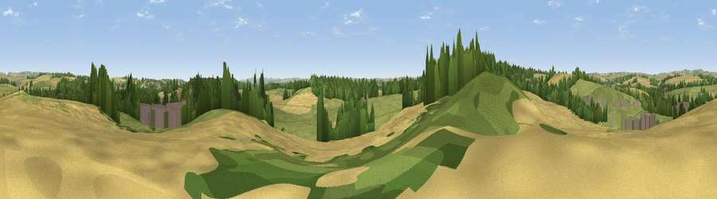

Viewpoint near Puddletown
#29784 in England · top 63% of its area beats it · near Puddletown · path 225 mWhere it is
The exact computed spot (SY 75225 93975). Click the marker for map links.
Public access: the nearest public right of way is about 225 m away — the final stretch may cross private land. Computed from Natural England's CRoW access layer and OpenStreetMap rights of way — not the legal definitive map. Always verify locally.
The view, rendered

A 360° render of this exact spot computed from the terrain model, tree cover and land cover — summer colours, afternoon light, calibrated against photographs of famous viewpoints. Real trees, hedges and buildings will differ in detail.
The panorama
Grey silhouette: terrain skyline in each direction (720 bearings, Earth curvature and refraction included). Dashed green: skyline with trees (+15 m) and buildings (+8 m) as obstacles. Blue strip: how far the ground is visible on each bearing.
Where the view opens
Wedge length = distance to the farthest visible ground on that bearing (vegetation-aware). Rings at 10, 25 and 50 km.
What fills the view
41% grassland · 34% cropland · 20% woodland · 5% built-up
Angular shares of the visible panorama (visual magnitude), not map area. Landscape diversity 0.52 (0–1 Shannon).
Key numbers
More beautiful places nearby
The staircase of upgrades: each row has a higher view potential than everything closer. Driving times are estimates from straight-line distance, calibrated against real road routing — check an actual route before setting out.
| Place | Direction | Drive | Score |
|---|---|---|---|
| Viewpoint near Puddletown | SW · 2 km | ~4 min | 44.8 |
| Viewpoint near West Stafford | SW · 3 km | ~8 min | 45.6 |
| Viewpoint near Tolpuddle | ENE · 3 km | ~8 min | 46.9 |
| Viewpoint near Tincleton | ESE · 4 km | ~9 min | 51.9 |
| Henning Hill | N · 8 km | ~16 min | 63.6 |
| Lyscombe Hill | N · 9 km | ~17 min | 70.5 |
| East Hill | SSW · 10 km | ~20 min | 79.6 |
| Viewpoint near Sutton Poyntz | SW · 11 km | ~21 min | 79.9 |
50.74485, -2.35251 · source: screening · position refined by local search. Computed location — check access rights before visiting.